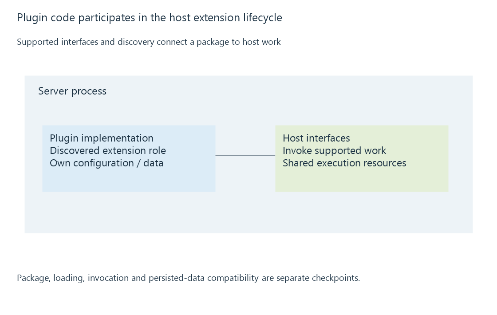

Plugin architecture inside a media server
A server plugin adds code to the host's extension lifecycle, using supported discovery and interfaces while sharing the host's execution resources.
A server plugin adds functionality through the media server's supported extension system. Its code participates in the host's lifecycle and interfaces rather than only sending requests from an external application.
Emby's development documentation describes plugin templates, supported interfaces and automatic discovery of particular extension types. Those contracts determine how the host recognizes and uses an extension.
Discovery connects code to an extension point

An extension point can represent a provider, task, service or another supported role. Implementing an interface is meaningful when the host's discovery and registration rules recognize it.
The documented IPlugin interface includes identity and descriptive properties, plus paths for plugin-related data. That is one part of the contract; it does not mean every arbitrary class in every assembly automatically runs at startup.
| Stage | What the host/plugin relationship needs |
|---|---|
| Package selection | Compatible software and dependencies |
| Loading | Required assemblies and symbols available |
| Discovery/registration | Recognized supported extension types |
| Invocation | Correct operation and lifecycle behavior |
| Shutdown or replacement | Work and resources handled under the host's rules |
Inside the host is a different resource boundary
Plugin work can consume the server's threads, memory and storage resources. A long-running provider or task can therefore affect the same host serving playback.
An external API client has its own process lifecycle and reaches the server through request contracts. An in-process extension should not be assumed to have a container-like isolation boundary merely because it is labelled a plugin.
That distinction makes cancellation, bounded work and error handling part of a useful extension design.
A plugin can own persistent data
Configuration and miscellaneous plugin data can have documented storage locations. Their lifetime can differ from cached results or from the plugin assembly itself.
Replacing the code does not universally migrate or discard those files. A compatible update needs to interpret the existing state through its supported migration rules.
For Emby, use the current plugin-development contract and distinguish package compatibility, discovered behavior and persistent state. The article explains that architecture without prescribing one extension's complete implementation.